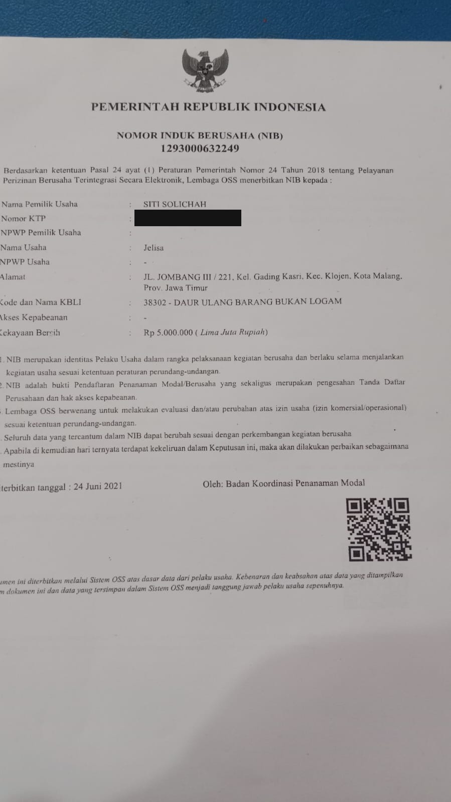
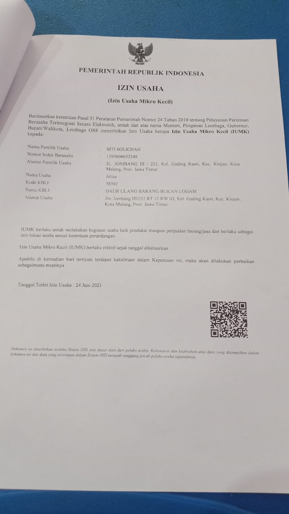

Profil Usaha
Tentang JELISA
Usaha mikro komunitas pengolahan minyak jelantah di Kelurahan Gading Kasri, Kecamatan Klojen, Kota Malang.
Profil
Dari Keresahan Warga, Menjadi Usaha Komunitas
JELISA (singkatan dari Jelantah Sisa) adalah usaha mikro berbasis komunitas yang bergerak di bidang pengelolaan dan pengolahan minyak jelantah. Beroperasi di bawah naungan warga RT. 011 RW. 003, Kelurahan Gading Kasri, Kecamatan Klojen, Kota Malang, JELISA lahir dari semangat gotong royong dan kepedulian nyata terhadap kondisi lingkungan sekitar.
Kami berkomitmen mengubah minyak jelantah (yang selama ini dianggap limbah berbahaya) menjadi produk yang bermanfaat dan bernilai ekonomi. Keanggotaan JELISA terbuka luas: siapa pun yang menyetorkan minyak jelantah secara otomatis menjadi bagian dari komunitas kami, tanpa biaya pendaftaran.
Visi
Menjadi penggerak utama pengelolaan minyak jelantah yang berkelanjutan demi terwujudnya lingkungan yang bersih, sehat, dan lestari.
Misi
- 1Mengedukasi masyarakat tentang bahaya pembuangan minyak jelantah secara sembarangan.
- 2Menyediakan sistem pengumpulan minyak jelantah yang mudah diakses masyarakat.
- 3Mengolah minyak jelantah menjadi produk berkualitas yang bermanfaat bagi masyarakat.
- 4Memberdayakan warga setempat melalui kegiatan usaha bernilai ekonomis dan sosial.
Perjalanan Kami
Sejarah JELISA Dari Masa ke Masa
2018
Lahirnya Keresahan dan Inisiasi
Saluran drainase RT. 011 RW. 003 kerap tersumbat akibat kebiasaan warga membuang minyak jelantah ke saluran air. Ibu-ibu PKK Dasawisma Kenikir IV berinisiatif membentuk \u201cBank Jelantah\u201d: minyak jelantah dikumpulkan lewat sistem tabungan atau beli putus, lalu dijual ke pengepul untuk diolah menjadi bahan bakar bio solar.
2019
Langkah Menuju Produksi
Pengurus mengajukan pelatihan pembuatan sabun berbahan minyak jelantah. Pelatihan ini berhasil terlaksana dan membuka wawasan baru tentang nilai ekonomis limbah rumah tangga. Produksi sabun mulai dirintis di RT. 011 RW. 003.
2021
Berdirinya JELISA
Produksi sabun makin terorganisasi. Usaha ini resmi diberi nama JELISA (Jelantah Sisa) dan terdaftar secara legal dengan NIB dan IUMK pada 24 Juni 2021.
2021-Kini
Berkembang Bersama Komunitas
Sabun Jelisa Batang Cuci diproduksi dan dipasarkan secara konsisten. Lilin aromatik sedang disiapkan sebagai produk berikutnya. Setiap warga yang menyetor minyak jelantah otomatis menjadi anggota komunitas.
Legalitas
Sertifikasi Resmi
Diterbitkan oleh Lembaga OSS (Online Single Submission) Republik Indonesia. Nomor KTP pemilik usaha pada dokumen NIB telah kami sensor demi melindungi data pribadi, bukan dihilangkan tanpa alasan.

Nomor Induk Berusaha (NIB)
Nomor KTP pemilik usaha pada foto asli disensor sebelum dipublikasikan di halaman ini.

Izin Usaha Mikro Kecil (IUMK)
Pemilik usaha terdaftar: Siti Solichah
Prestasi & Berita
Pencapaian JELISA
Belum Ada Prestasi atau Liputan yang Dapat Diverifikasi
Kami tidak menampilkan klaim penghargaan atau berita tanpa sumber yang jelas. Begitu JELISA mendapat penghargaan, sertifikasi tambahan, atau liputan media, kirimkan dokumen/tautan sumbernya dan bagian ini akan diisi dengan kartu artikel, sudah disiapkan secara teknis (lihat .article-card pada site-layout.css).